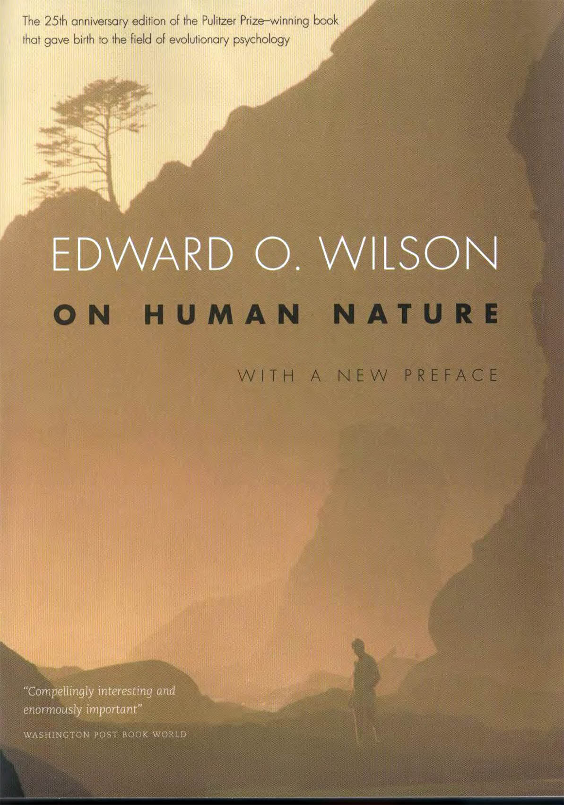

<blockquote>
  What though these reasonings concerning human nature seem abstract and of difficult comprehension, this affords no presumption of their falsehood. On the contrary, it seems impossible that what has hitherto escaped so many wise and profound philosophers can be very obvious and easy. And whatever pains these researches may cost us, we may think ourselves sufficiently rewarded, not only in point of profit but of pleasure, if, by that means, we can make any addition to our stock of knowledge in subjects of such unspeakable importance.
                                  <p class="text-right">Hume, An Inquiry Concerning Human Understanding</p>
</blockquote>


<!--
+ PREFACE, 2004
+ PREFACE
+ CHAPTER 1. DILEMMA
+ CHAPTER 2. HEREDITY
+ CHAPTER 3. DEVELOPMENT
+ CHAPTER 4. EMERGENCE
+ CHAPTER 5. AGGRESSION
+ CHAPTER 6. SEX
+ CHAPTER 7. ALTRUISM
+ CHAPTER 8. RELIGION
+ CHAPTER 9. HOPE
+ GLOSSARY
+ NOTES
+ INDEX
    -->
